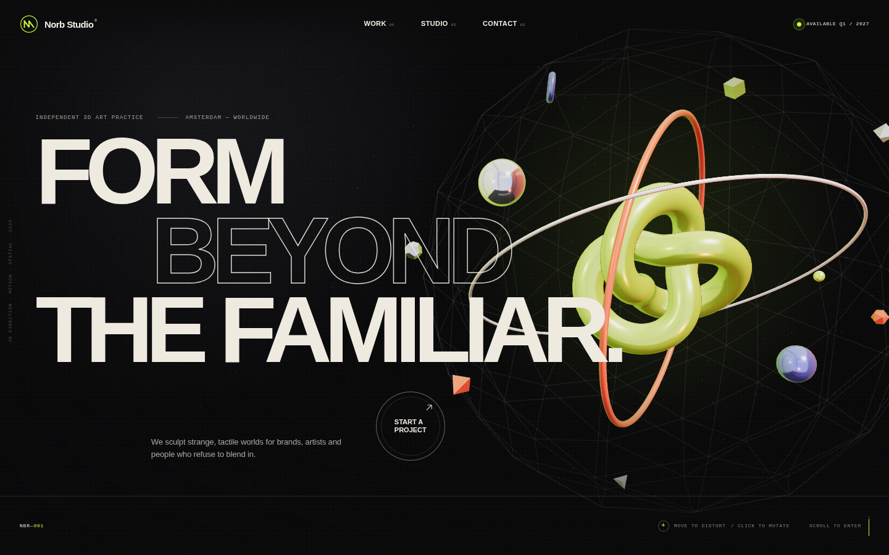

Art Studio 3D

运行 PASS / 三维 PASS
桌面原图 · 手机图 · Judge 原始记录
题面
Generate an innovative and immersive 3D art studio home page. The studio's name is Norb Studio. Use abstract 3D shapes and motion graphics to create a dynamic and engaging user experience, demonstrating the creativity of the studio. The homepage should feature: 1. A 3D loading screen that showcases a rotating cube, each face containing one letter and repeats Norb Studio's name as it spins. 2. A hero section with a full-screen 3D environment that includes interactive floating shapes. 3. A nice narrative section that speaks the story and goal of Norb Studio as you scroll down, with smooth transitions and bold visual effects. 4. A gallery section that displays a carousel of art pieces created by Norb Studio vertically, arrayed in a 3D helix shape and rotates as the user scrolls down. 5. A contact section with a 3D interactive form, and when the user hovers over the input fields, they animate and change color, providing a tactile experience.
Judge 摘要（英文原文）
Norb Studio's page runs and delivers a genuine real-time 3D experience: a full-screen WebGL hero sculpture that responds to pointer movement and clicks, a readable studio narrative with bold scroll transitions, a scroll-driven 3D helix gallery, and a 3D-treated contact form with strong hover/focus feedback. Desktop and 390x844 mobile layouts were usable. The main weakness is the loading cube, which was only observed through the accessibility snapshot (six faces reading N, R, O, B, S, ✦) and could not be captured in a delivered screenshot before it transitioned away, so the exact spin/letter delivery could not be fully verified visually.
本地生成源码路径
/inspire/hdd2/project/special-project-1/public/experiments/Web3DBench/runs/web3dbench-deepseek-v41-codex-load120-repeat3-4-20261112/eval/eval-web3dbench-deepseek-v41-codex-load120-repeat3-4-20261112-bbd1d26-r2-1794485628-34b727-3d6adde08c38/eval/uae/samples/ccae8888-9c20-4bde-a39e-8d3c0e20b2b6-8eba1220e5a2/attempt-1/deliverables/src